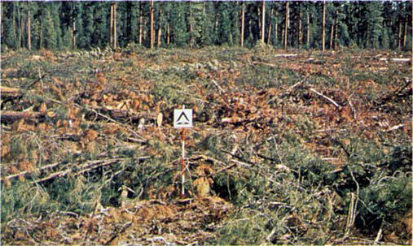
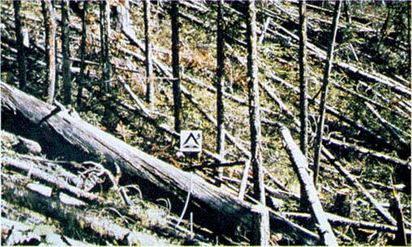
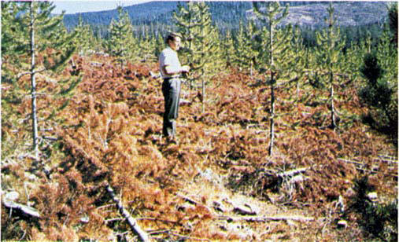

Rapidly spreading fires with high intensities capable of generating firebrands can occur. When fire starts, it is generally sustained until a fuel break or change in fuels is encountered. The visual impression is dominated by slash and much of it is less than 3 inches (7.6 cm) in diameter. The fuels total less than 35 tons per acre (15.6 t/ha) and seem well distributed. Heavily thinned conifer stands, clearcuts, and medium or heavy partial cuts are represented. The material larger than 3 inches (7.6 cm) is represented by encountering 11 pieces, 6 inches (15.2 cm) in diameter, along a 50-foot (15-m) transect. Field situations are presented in photographs 34, 35, and 36.

Photo 34. Ponderosa pine clearcut east of Cascade mountain range in
Oregon and Washington.

Photo 35. Cedar-hemlock partial cut in northern Idaho, Region 1, USFS.

Photo 36. Lodgepole pine thinning slash on Lewis and Clark National
Forest. Red slash condition increases classification from light to medium.